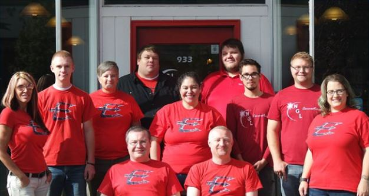
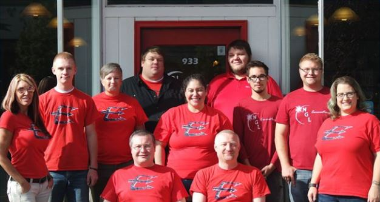
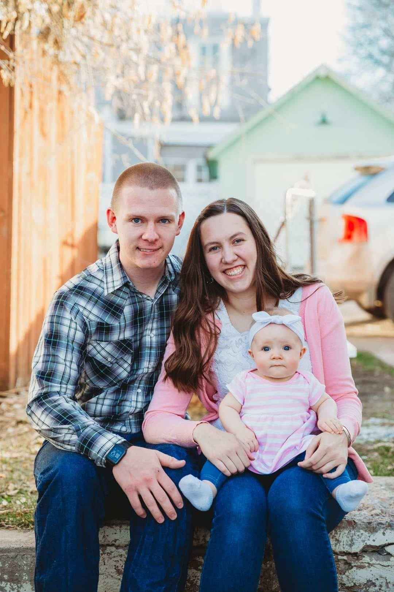

My name is Dustin Myers. I am from Evanston Wyoming. I am the 6th generation on a family ranch. My home is a short drive away from the mountains so I grew up spending a lot of time there. I found a passion for being outside and doing almost nything outdoors. I love to mountain bike right now. I have ridden in Evanston and a few places in Utah and Idaho. I hope to be able to expand this as time goes on.It is something that I find very exciting.
Aside from mountain biking, I really enjoy hiking, backpacking, camping, caving, fishing, canoeing, rock climbing, snowboarding, cross country skiing, snowmobiling, and mountaineering just to name a few. If I am not busy with school or work, I spend a lot of time doing one of these activities. There is just nothing quite like being in the outdoors where nobody else is and/or is willing to be.
 

I also have a long history of professional background as well for my age. I have been a general construction worker, a truss builder, a metal roofer, a sales associate at an ace hardware, and most recently a network engineer at an internet company. I started there as a tower technichian right before my mission. When I came back I resumed my position but also took on some customer support on the phones as well as installing and repairing. When school came around I needed a job so my boss taught me enough stuff to be dangerous and sent me off as his new sounding board/network tech. I learned enough that when I returned, I became my boss' right hand man and second in command for networking problems.
My life is not complete with just fun and work though. At the end of my second semester at BYUI, I got engaged to my now wife. We were married in september of 2018 and a year later welcomed a baby girl into our family. I love to spend time with them and watch my daughter develop and grow. We are building our lives in Evanston. We rent and repair my boss' rental house. Life for me is always an adventure.
